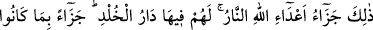
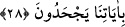
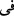
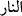
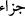
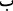
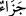
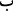
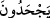

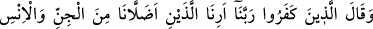
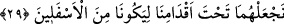
ise âhirette olacaktır.
28. İşte bu Allah düşmanlarının cezası, ateştir. Âyetlerimizi inkâr etmelerinden
dolayı, orada onlara ceza olarak ebedî kalacakları yurt (cehennem) vardır.
“İşte bu Allah düşmanlarının cezâsı, ateştir.” Bu zikredilen cezâ Allah düşmanları
için hazırlanmış olan cezâdır. Bizim hak olan “âyetlerimizi inkâr etmelerinden dolayı”
yahut onlar hakkında boş lakırdı etmelerinin cezâsı olarak “orada onlara cezâ olarak
ebedî kalacakları yurt cehennem vardır”. Ateş, onların devamlı ikamet yurtları olup,
oradan başka bir yere intikalleri söz konusu değildir.
Artık ikametleri hep orasıdır. Bu mânâ ( ) harf-i cerrinin zarfiyet için olmayıp tecrid
mânâsında olduğuna göredir. Sanki cehennemde onlara mekân içinde mekân ihdâs
edilmiş, yahut cehennemin alt tabakaları demek olan derekelerde ebedî kalacakları özel
azap hücreleri tahsis edilmiştir.
Tabiî ki bunlar “Âyetlerimizi inkâr etmelerinin cezâsı”dır. Bu (
) kelimesi
mübteda olup (
) ifâdesi, onun haberidir. (
) kelimesi cezânın atf-ı beyânıdır. Yahut
(
) kelimesi mahzuf bir mübtedânın haberidir. “Durum budur” demektir. Bu durumda
hüküm cümlenin mânâsından ibâret olup cezâyı kapsamamaktadır. Daha sonraki cümle
bir öncekini açıklayan müstakil bir cümledir.
Bu (
) kelimesi mukadder bir fiille mansuptur; yani onlar cezalandırılmakla
cezalandırılacaklar demektir. Buradaki birinci ( ), (
) kelimesine; ikinci ( ) (
)
kelimesine taalluk eder. Âyet sonlarındaki uyum gözetilerek ( ) fiil üzerine takdim
edilmiştir. Yani bizim gerçek âyetlerimizi inkâr etmeleri yahut âyetler hakkında boş
lakırdı etmeleri sebebiyle cezâlandırılmışlardır. Burada inkârın zikredilmesi Kur’an
hakkında boş lakırdıya sebep olduğu içindir.
29. Kâfirler cehennemde: Rabbimiz! Cinlerden ve insanlardan bizi saptıranları
bize göster de aşağılanmışlardan olsunlar diye onları ayaklarımızın altına alalım!
diyecekler.
Artık bahse konu şiddetli azâba dûçâr olan bu “kâfirler cehennemde: Rabbimiz!
Cinlerden ve insanlardan bizi saptıranları” insan ve cinlerden sapıklığı süsleyip
yaldızlayarak bizi sapıklığa sevkeden şeytanları “bize göster de…”